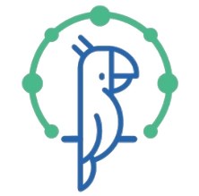

iPOS
生信组学数据云计算平台
提供生物信息学组学数据分析服务，支持多种组学数据的处理和分析。
平台旨在为科研人员提供高效、便捷的组学数据分析 BI 工具。
质谱谱图数据库
提供质谱数据的存储、查询、分析和鉴定服务，支持多种质谱数据格式。
平台旨在为质谱研究人员提供高效、便捷的谱图数据搜索引擎。
组学数据质量实时监控平台
提供组学数据的质量监控、分析和可视化服务，支持多种组学数据格式。
平台旨在为科研人员提供高效、便捷的组学数据质量控制工具。